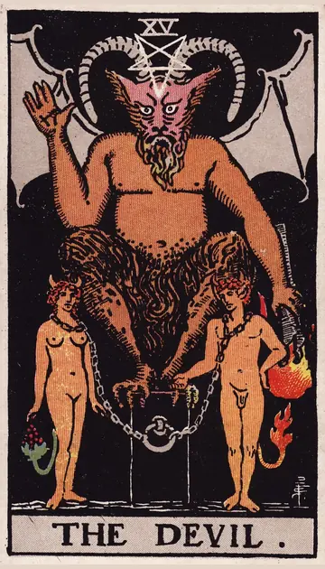

正位置悪魔の正位置
キーワード：誘惑・執着・しがらみ
恋愛
強く惹かれる一方で、執着にとらわれやすい時です。
相手の気持ちあなたに強く惹かれ、離れがたいと感じているようです。
この先執着を手放せば、健やかな関係が見えてきそうです。
アドバイス相手への気持ちが、執着になっていないか見つめ直しましょう。
気をつけること相手に依存しすぎないように。
この先執着を手放せば、健やかな関係が見えてきそうです。
アドバイス相手への気持ちが、執着になっていないか見つめ直しましょう。
気をつけること相手に依存しすぎないように。
人間関係
断れない付き合いや、しがらみを感じやすい時です。
相手の気持ちあなたとの関係を、断ち切れずにいるようです。
この先しがらみから抜け出すきっかけがありそうです。
アドバイス無理な付き合いには、はっきり線を引きましょう。
気をつけること誰かに縛られたり、誰かを縛ったりしないように。
この先しがらみから抜け出すきっかけがありそうです。
アドバイス無理な付き合いには、はっきり線を引きましょう。
気をつけること誰かに縛られたり、誰かを縛ったりしないように。
仕事・学業
目先の利益や楽さに流されやすい時期です。
この先誘惑に流されなければ、確かな成果につながりそうです。
アドバイス長い目で見て、本当に得になるかを考えましょう。
気をつけることうまい話や楽な方法に、飛びつかないように。
アドバイス長い目で見て、本当に得になるかを考えましょう。
気をつけることうまい話や楽な方法に、飛びつかないように。
お金
欲しい気持ちに、流されやすい時です。
この先誘惑を断てば、お金が残りやすくなりそうです。
アドバイス買う前に、一晩おいて考えましょう。
気をつけることローンや分割払いに頼りすぎないように。
アドバイス買う前に、一晩おいて考えましょう。
気をつけることローンや分割払いに頼りすぎないように。
生活
楽な習慣に、流されやすい時です。
この先習慣を変えれば、暮らしが軽くなりそうです。
アドバイスやめたい習慣を一つ決めて、手放しましょう。
気をつけることスマホやゲームのやりすぎに気をつけて。
アドバイスやめたい習慣を一つ決めて、手放しましょう。
気をつけることスマホやゲームのやりすぎに気をつけて。
今日の運勢
誘惑に負けやすい日です。
この先我慢した分、すっきりした気分になれそうです。
アドバイス誘惑に負けないよう、あらかじめ決まりをつくっておきましょう。
気をつけること衝動買いや食べすぎ、夜更かしに気をつけて。
アドバイス誘惑に負けないよう、あらかじめ決まりをつくっておきましょう。
気をつけること衝動買いや食べすぎ、夜更かしに気をつけて。
逆位置悪魔の逆位置
キーワード：解放・断ち切る・目覚め
恋愛
縛られていた気持ちから、解放される時です。
相手の気持ちあなたとの関係を、見直そうとしているようです。
この先自由な気持ちで、新しい恋を楽しめそうです。
アドバイス執着を手放し、自分らしさを取り戻しましょう。
気をつけること離れたはずの関係に、また引き戻されないように。
この先自由な気持ちで、新しい恋を楽しめそうです。
アドバイス執着を手放し、自分らしさを取り戻しましょう。
気をつけること離れたはずの関係に、また引き戻されないように。
人間関係
良くない関係を断ち切れる時です。
相手の気持ちあなたとの関係を、もっと自然な形にしたいと感じているようです。
この先健やかな人間関係を築けそうです。
アドバイス距離を置いたほうが良い関係からは、思い切って離れましょう。
気をつけること解放感から、極端な行動に出ないように。
この先健やかな人間関係を築けそうです。
アドバイス距離を置いたほうが良い関係からは、思い切って離れましょう。
気をつけること解放感から、極端な行動に出ないように。
仕事・学業
悪い習慣から抜け出せる時期です。
この先新しい環境で、のびのびと力を発揮できそうです。
アドバイス無理のある働き方を見直しましょう。
気をつけること気がゆるんで、元の習慣に戻らないように。
アドバイス無理のある働き方を見直しましょう。
気をつけること気がゆるんで、元の習慣に戻らないように。
お金
お金の悪い癖を、断ち切れる時です。
この先お金の流れが健全になりそうです。
アドバイス使いすぎの原因を、一つ取り除きましょう。
気をつけること解放感から、使いすぎないように。
アドバイス使いすぎの原因を、一つ取り除きましょう。
気をつけること解放感から、使いすぎないように。
生活
悪い習慣から抜け出せる時です。
この先身軽で健やかな暮らしになりそうです。
アドバイスやめられたことを、自分でほめましょう。
気をつけること反動で、元の習慣に戻らないように。
アドバイスやめられたことを、自分でほめましょう。
気をつけること反動で、元の習慣に戻らないように。
今日の運勢
気持ちが軽くなる日です。
この先気持ちが晴れて、前向きになれそうです。
アドバイスやめたかった習慣を、一つやめてみましょう。
気をつけること反動での使いすぎや食べすぎに気をつけて。
アドバイスやめたかった習慣を、一つやめてみましょう。
気をつけること反動での使いすぎや食べすぎに気をつけて。
このページの文章は、アプリ「ひとやすみタロット」の結果に使っている文章です。アプリでは、あなたの相談や、カードが出た位置（今の状況・これからの流れ・アドバイス）に合わせて、この中から文章を選びます。逆位置の読み方は逆位置のことをご覧ください。